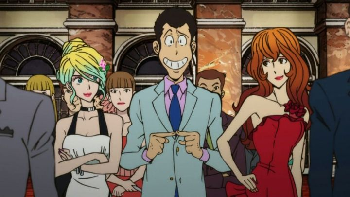

Disclaimer: This review covers the International version (originally airing in Italy, before being dubbed into English) of "Lupin the Third - Part IV," sometimes titled with the additional subtitle "The Italian Adventure."I like to preface my reviews with a little background on the show or movie when warranted. And "Lupin the Third - Part IV - The Italian Adventure" has a lot to talk about, from the unlikelihood that it would ever exist in the first place, to the bizarre international release.Firstly, "Lupin the Third" (or "3rd" if you prefer) is a popular long-running franchise by manga writer Monkey Punch, staring a gentleman thief with an endless bag of tricks, working alongside (or against) a sharpshooter, an old-fashioned samurai, a femme-fatale, and an inspector that's always one step behind. The first TV series aired in 1971, followed by subsequent seasons ("Part II" and "Part III") up to the mid 1980s. The stories were episodic and unrelated, allowing for an endless and accessible show. Iconically, each season gave Lupin a new colored jacket: green, then red, then pink.Since then, there have been dozens of feature-length films, television specials, and OVAs, mostly with Lupin wearing the red jacket he became so well known for. This continued well into the 2010's, with no sign of stopping. But there was no television series as a follow-up, and it seemed very unlikely that one would ever appear... until the release of "The Woman Called Fujiko Mine" in 2012. That hyper-stylish adult-reimagining of a classically silly (and mostly family-friendly) cartoon seemed to awaken new interest in the franchise. Not long after, "Part IV" aired on TV, with a new blue jacketed Lupin. There was even a "Part V" shortly after that (but also with the blue jacket, breaking the fun of guessing what color would come next... I think purple or yellow could work). Had you asked someone ten years earlier, no one would have guessed a proper TV series would ever release, despite the character and movies being a part of Japanese pop culture."Lupin the Third" and his fandom appear to be mostly in Japan, with limited audience recognition elsewhere (I think most American otaku will know a lot more about "Naruto" and "Pokemon" before having heard of "Lupin"). But "Part IV" was kind of a big deal, and a new opportunity to introduce the character to a global audience (and with a story that doesn't require much prior knowledge, no one would be lost, other than wondering why the series was "starting" with "part 4"). This new series was also set entirely in Italy, a new environment to stabilize the normally Japan-based or globe-trotting adventures. So "Part IV" would get a world premiere in Italy, not Japan, complete with a unique opening theme, music soundtrack, and video edit: this "international" version was technically a minute or two longer per-episode than the Japanese version, mostly from an extended character introduction at the beginning. English fans would also get the Italian version with a dub through Toonami's revitalized television block.... however, many fans demand purity, insisting on the original Japanese-language version at all times (sometimes even for "American-produced anime" where no Japanese dub exists). But there were two different edits, with TMS Entertainment preferring English audiences use the international version. What was a distributor to do? Unable to program or re-edit the dubs into one version, American distribitor Discotek (and European distributor Anime Limited) was forced to give a home-video release that ONLY had the English dub, with the international edit. Later, they would release a separate set with ONLY the Japanese dub with the Japanese edit. If you always preferred either dub or sub, this wasn't a big deal, but if you were the type of viewer who liked to try both, you were stuck paying twice. It was a bad compromise, but nothing more could have been done, other than releasing a mega-set with twice the number of discs.Personally, I prefer the English dub about 80% of the time, and recent "Lupin" entries in particular had good dubs to follow. I didn't follow differences between the two closely, but the primary issue appears to be in the soundtracks and the opening. In particular, the English opening is different from both the Japanese and Italian opening: the Japanese version gets the classic "Lupin" theme with beautiful animation, and the Italian version gets a bizzare but fun Italian-language rap. By comparison, the English opening is the worst and most boring of the three. Like the soundtrack, it tries to infuse a more European-jazz style, which is nice, but also disappointing to anyone who recognizes the franchise's original style. Anyway, that was my essay on the release of "Part IV." Now the review: is it worth watching?I like "Lupin" and the ambitious-thief theme it uses, but have otherwise been a little lukewarm on the so-called capers he gets into. Sure, they're fun, but at this point there must be a few hundred unique stories of how he managed to steal some valuable item from under the noses of security. It's like saying you like Sherlock Holmes, and then reading every story that involves him... eventually it would feel like a chore, and you'd want to stick to the three or four favorite stories you have rather than watching for more. Like the rest of the franchise, "Part IV" makes for fun passive viewing, accessible and easy to recommend to a large audience (despite some minor violence, this series is relatively OK for children too). That was always part of its style: it's easy to recommend, but really difficult to love and get excited about. I like the character, but can't remember most of the stories with him. But "Part IV" does try to prove itself, by having stories that are either novel, or just well written. In the first episode, we see Lupin getting married (?!) to new character Rebecca, a young and spoiled girl with weatlh from family, and a career in acting, music, modeling, and other celebrity tropes. Has he really turned a new leaf and decided to settle down? And not to Fujiko, his long-time crush?! In that first episode, we learn he really just wanted to steal a sacred family crown used for the wedding ceremony, with intention to divorce immediately after. But his plans are dashed when he has to compete to steal the crown from Fujiko, and also... Rebecca herself? Yes, the girl's a handful, using her wealth to do whatever she pleases, including out-stealing Lupin for the thrill of it. In following episodes (usually one episode per story), we get recurring elements of Lupin trying to get Rebecca to sign their divorce papers, and a few new characters that reoccur across different stories, set in different regions of Italy. England's MI6 is also heavily involved. Each of the stories are varied, with interesting new foes and allies, each with different motivations and backgrounds, and at least one or two twists each time. Like past seasons, some stories heavily involve Lupin, and some focus more on Jigen, Goemon or the others. The stories are strong here, and compared to the rest of the franchise, it's above average. Not ridiculously fun or clever, but good.Most of the stories are grounded in reality, but the series has two overarching plots, climaxing at the first half and at the end. That grander story, mostly independent of the individual episodes, leans into the supernatural elements that the franchise has done before (without spoiling anything, imagine cases where Lupin was able to predict the future, speak with ghosts, etc.). I'd be more impressed if this was entirely left out, but I admit these were exciting, and in those final episodes at the end of each arc, I was glued to the screen.The stories in general have strong writing in the early episodes, but were more exciting in the later episodes. Maybe I just fell more in love with the franchise the more I watched? There's also a number of episodes in the second-half of the series that appear to take place years before the rest of the season, but there's little acknowledgement about the timeline, so those were a little confusing and out of place.Production-wise, "Part IV" borrows a lot from the visual design first invented for "The Woman Called Fujiko Mine." Character designs are stylish, standing out a lot compared to typical anime, but also not quite as bold as "The Woman" or its subsequent films were. There is a bolder use of color here, especially with blues, reds and pinks. But the animation is a bit disappointing, using a lot of obvious digital-layout shortcuts, and coming off no better than an old Saturday-morning cartoon. That's true for most of it anyway... there's a few minutes of impressive animation during scenes that serve as the climax for the two big arcs, and animation in general seems to get a little better overall as the series continues. The later episode "Non-Stop Rendezvous," acting as a prequel to the whole thing, has the best production values, and consistently throughout it. I do think "Lupin the Third" is mandatory viewing for any cartoon fan, but not any particular series or movie. You can pick a couple entries and get the jist. "Part IV - The Italian Adventure" is a strong return to form, with solid stories and characterizations that feel true to the characters and how they're meant to be (his other films are more varied, and can often feel either too family-friendly, too silly, or too violent and sexy). If you're a long-time fan and got excited to learn a new official series was made, you shouldn't be disappointed. If you're a new viewer, "Part IV" is a great place to start. But if you were looking for something new and exciting to reignite interest in the franchise... well, that's what "The Woman Called Fujiko Mine" was for, and I'd recommend that.
- "Ani" More reviews can be found at : https://2danicritic.github.io/ Previous review: review_Lupin_the_Third_-_Part_I Next review: review_Lupin_the_Third_-_The_Castle_of_Cagliostro